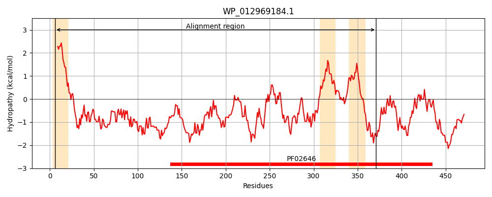
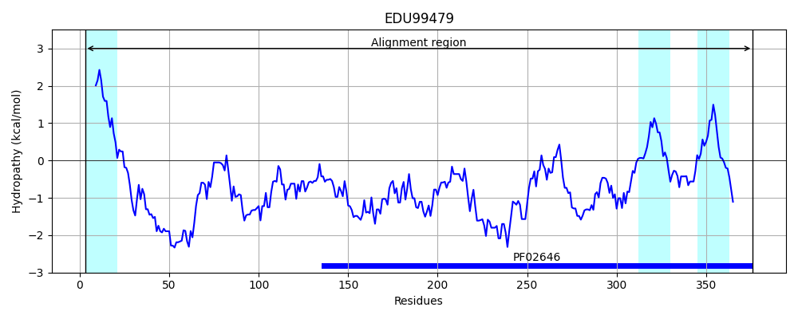
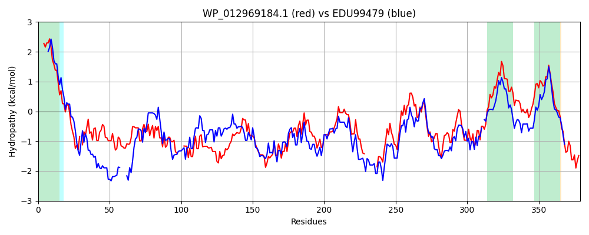

Hit Accession: EDU99479
Hit TCID: 9.B.101.3.1
Hit Description: gnl|BL_ORD_ID|3972 gnl|TC-DB|EDU99479.1|9.B.101.3.1 RmuC domain protein [Bacteroides coprocola DSM 17136]
Mach Len: 379
e:0.000000
Query TMS Count : 3
Hit TMS Count: 3
TMS-Overlap Score: 1.950000
Predicted Substrates:None
BLAST Alignment:
Score: 632 , Bit scores: 248 bits, E-value: 5.2e-78, Alignment length: 379, Percentage identity: 35
Query: 6 IISAVIALAAGLMVGWLATKARADQIRADL-IEERRELDIELSAARQQLVQEAHWREECELLNNELRSLRDINTSLEADLREVTTRLESTQLHAEDKI----RQMVNSEQRLSEQFENLANRIFEHSNRRVDEQNRLSLHGLLTPLREQLDGFRRQVQESFGQEARERHTLAHEIRNLQQLNAQMAQEALNLTKALKGDNKTQGNWGEVVLTRVLEASGLREGYEYQTQ--------VSIETDNRSRMQPDVIVRLPQGKDVVIDAKMTLVAYERYFNAEDDYTREVALQEHLASVRNHIRLLGRKDYQQLPGLRSLDYVLMFIPVEPAFLVAIDRQPELISEALQNNIMLVSPTTLLVALRTIANLWRYEHQSRNAQK 371
I+ +I L G ++G+ + + ++ L ++ + D+ + +Q + +REE N +++ + N L + L++ + E+K+ +++VN ++ + +FEN+AN+IF+ ++ + SL LL P RE L+ F+ QV E + +E+++R +L +I+ L QLN Q++ EA NLT+ALKGD+KTQGNWGE++L +LE SGLREG EY Q + +N R+QPDV+V+ P + V+ID+K++L AY Y N+ + +E L+ HL+SV+ HI L +KDY + + SLD+V+MFIP EPA+++A+ P L + A + ++L+SPT L+ ALR +LW+ E+Q + +K
Sbjct: 3 ILYLIITLLIGGLIGYFIASRQLNSLKTQLYLQTKHHEDLLEAEKKQHATETERYREE----NLRIQNQAENNIKLVVEANRQVAALQAEKRALEEKLDHQKQEIVNLHKQFNLEFENIANKIFQQKAESFNKLSAESLSNLLNPFRENLNEFKHQVAEVYDKESKQRFSLEDKIKELVQLNKQISDEANNLTRALKGDSKTQGNWGEMILESILENSGLREGEEYFRQEFLKDEHGEPLRNENGQRLQPDVLVKYPDNRQVIIDSKVSLTAYANYVNSSERSEQEQYLRAHLSSVKAHIDELSQKDYSRY-NISSLDFVMMFIPNEPAYVLALQTDPNLWNYAYKKKVVLMSPTNLIAALRLALDLWKREYQEKTPRK 376 | Protein Hydropathy Plots: |
|---|
|  |  |
Pairwise Alignment-Hydropathy Plot:
|
|---|
|  |